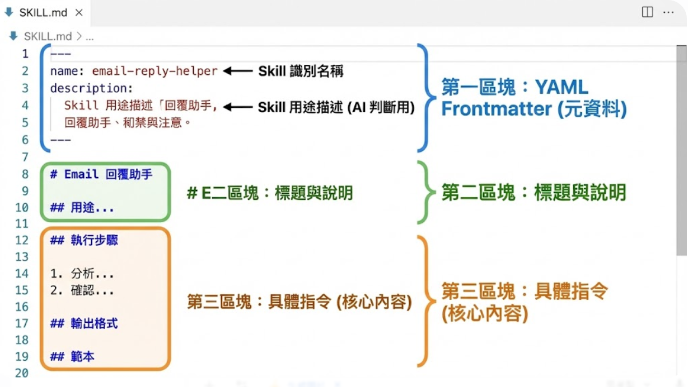
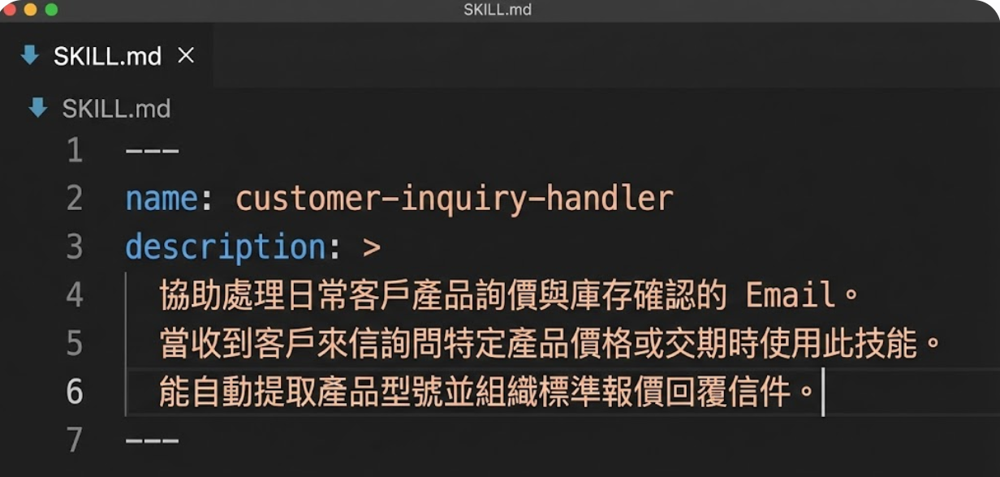

SKILL.md 完整解析
拆解 Skill 的三層架構，掌握 YAML 前言、五大必備章節與四大關鍵字模式
🏗️ Skill 的三層架構
每個 Skill 由一個資料夾構成，核心是 SKILL.md 檔案，搭配 assets/ 輔助資源。整體採用「漸進式揭露」設計，分為三層，AI 不會一次把所有資料都讀進去，而是根據需要逐層載入：
📌 第一層：YAML 前言
Skill 的「身分證」，包含名稱和描述。AI 啟動時先讀這層（~100 tokens），判斷「使用者的需求跟哪個 Skill 有關」。
就像書的封面和目錄——快速掃描，不花時間。
📋 第二層：Markdown 指令
Skill 的「操作手冊」，包含五大必備章節：前置檢查、執行步驟、例外處理、安全規則、輸出格式（500~5000 tokens）。
只有 AI 判斷「相關」時才會載入。
📦 第三層：Assets 資源
Skill 的「工具箱」，放範本檔案、參考資料、生成器表單等輔助資源。用 @assets/filename.md 引用，按需載入。
只有在執行過程中需要時才會讀取。
📂 資料夾結構
skill-name/ ← Skill 資料夾（名稱即 Skill ID）
├── SKILL.md ← 核心指令檔（必須存在）
└── assets/ ← 輔助資源（選用）
├── template.md ← 範本檔案（如 Email 範本）
└── form.html ← 生成器表單（進階）CLAUDE.md 每次都完整讀取，Skills 是「用到才載入」，你可以建立幾十個 Skill 而不會拖慢 AI。
📁 資料夾結構實作
了解三層架構後，讓我們看看實際的資料夾結構長什麼樣子。以 Email 回覆助手為例：
skills-source/ ← 所有 Skill 的根目錄
├── email-reply-helper/ ← Skill 1：Email 回覆助手
│ ├── SKILL.md ← 核心指令（YAML + Markdown）
│ └── assets/
│ └── email-template.md ← Email 回覆範本
├── meeting-notes-generator/ ← Skill 2：會議記錄產生器
│ ├── SKILL.md
│ └── assets/
│ └── meeting-template.md
└── pencil-web-designer/ ← Skill 3：網頁設計助手
├── SKILL.md
└── assets/
└── design-guidelines.md🔧 部署到不同平台的路徑
| 平台 | Skill 存放路徑 | 說明 |
|---|---|---|
| Antigravity | .agent/skills/email-reply-helper/SKILL.md |
放在專案根目錄的 .agent/skills/ 下 |
| Claude Code | .claude/skills/email-reply-helper/SKILL.md |
放在專案根目錄的 .claude/skills/ 下 |
| Gemini CLI | ./email-reply-helper/SKILL.md |
直接放在工作目錄中，Gemini 會自動掃描 |
name 欄位完全一致！例如資料夾叫 email-reply-helper，YAML 中的 name 也必須是 email-reply-helper。大小寫不同、底線和連字號混用，都會導致 AI 找不到 Skill。

📋 YAML 前言詳解
YAML 前言是 SKILL.md 最上方、用 --- 包裹的區塊，定義了 Skill 的「身分證資訊」。AI 會先讀這段來決定是否需要載入完整 Skill。以下是一個完整的 YAML 前言範例：
---
name: email-reply-helper # 必填：Skill 唯一識別名稱
description: > # 必填：多行描述（觸發判斷依據）
協助撰寫專業的商業 Email 回覆信件。
當使用者需要回覆客戶來信、處理商業書信、
回應詢價或客訴時，使用此技能。
支援：詢價回覆、客訴回應、合作洽談、一般商業往來。
globs: # 選填：檔案比對模式
alwaysApply: false # 選填：是否每次都載入
---| 欄位 | 必填 | 說明 | 範例 |
|---|---|---|---|
name |
✅ 是 | Skill 唯一識別名稱，必須與資料夾名稱一致，小寫英文加連字號 | email-reply-helper |
description |
✅ 是 | 1~3 行描述，AI 據此判斷何時觸發。要明確寫出「什麼時候用」 | 協助撰寫專業的商業 Email 回覆 |
globs |
❌ 否 | 檔案路徑比對模式，使用者開啟符合的檔案時自動觸發 | *.email, *.eml |
alwaysApply |
❌ 否 | 設為 true 時，每次對話都會自動載入此 Skill |
false（預設值） |
1.
--- 前後各三個半形短線，不能多也不能少
2. 欄位名稱後面要有半形冒號 + 空格（如
name: ）
3.
description: > 的 > 表示多行文字，後續每行縮排 2 格
4. 所有符號必須是半形（英文冒號
:，不是中文冒號 ：）
✍️ YAML 撰寫實作
理解了 YAML 前言的格式後，讓我們來看看實際撰寫時容易犯的錯誤，以及正確的寫法。很多初學者在這一步卡關，原因通常不是概念不懂，而是格式細節出錯。
❌ 常見錯誤 vs ✅ 正確寫法
| 錯誤類型 | 錯誤寫法 | 正確寫法 |
|---|---|---|
| 全形冒號 | name：email-reply-helper |
name: email-reply-helper |
| 冒號後沒空格 | name:email-reply-helper |
name: email-reply-helper |
| 名稱不一致 | 資料夾 email-reply-helperYAML name: email_reply |
兩者必須完全相同 |
| description 沒縮排 | description: >協助撰寫...（頂格寫） |
description: > 協助撰寫...（縮排 2 格） |
| 短線數量錯 | --（2 個）或 ----（4 個） |
---（正好 3 個） |
💡 description 撰寫技巧
✅ 好的描述
「協助撰寫專業的商業 Email 回覆信件。當使用者需要回覆客戶來信、處理商業書信、回應詢價或客訴時，使用此技能。」
→ 明確說出「做什麼」+「何時用」
❌ 差的描述
「幫忙處理信件相關的事情。」
→ 太模糊，AI 不知道何時該啟用。「處理信件」可以是寫信、讀信、歸檔，範圍太廣。

📖 五大必備章節（上）
YAML 前言之後的 Markdown 正文，建議依照五個章節的順序撰寫。AI 會從上到下依序理解，章節順序會影響執行效果。先看前兩個最重要的章節：
① 前置檢查（Pre-check）
在 AI 開始執行任務之前，先確認必要的輸入資訊是否齊全。這就像廚師開始做菜前，先檢查食材有沒有買齊。
## 前置檢查
Check if 使用者提供了客戶來信的原文。
- 如果沒有，Ask user 提供完整的來信內容。
Check if 使用者指定了回覆語氣偏好。
- 如果沒有，預設使用「專業但友善」的語氣。
Check if 來信語言是否為中文。
- 如果是英文來信，Ask user 是否需要用英文回覆。② 執行步驟（Execution Steps）
這是 Skill 的核心——告訴 AI 要依序完成哪些動作。每一步都要有明確的輸入、處理邏輯和輸出。
## 執行步驟
Step 1：辨識信件類型
- 判斷來信屬於以下哪一類：詢價、投訴、感謝、合作邀約、一般詢問
- 輸出：信件類型標籤
Step 2：分析來信情緒
- 評估來信者的情緒傾向：正面、中性、負面
- Check if 情緒為負面，則回覆時 MUST 先表達同理心
Step 3：提取關鍵資訊
- 找出：核心需求、時間限制、金額相關、對方稱謂
- Check if 缺少關鍵資訊，標註為「待確認」
Step 4：撰寫回覆信件
- 根據信件類型和情緒，選擇對應的回覆框架
- MUST 回覆開頭稱呼對方姓名或職稱📖 五大必備章節（下）
接續前面的前置檢查與執行步驟，還有三個同樣重要的章節——例外處理、安全規則、輸出格式。它們負責確保 Skill 在各種邊界情況下都能穩定運作。
③ 例外處理（Exception Handling）
## 例外處理
Check if 來信語言無法判斷：
- Ask user 確認來信語言，並詢問回覆語言偏好
Check if 來信內容涉及法律糾紛或訴訟威脅：
- MUST 回覆「建議您諮詢專業法律顧問」
- NEVER 代表公司做出任何承諾或讓步
Check if 來信包含不明附件或可疑連結：
- 提醒使用者注意資訊安全，不要點擊可疑連結④ 安全規則（Safety Rules）
## 安全規則
MUST 使用繁體中文回覆（除非對方使用其他語言）
MUST 保持專業但友善的語氣
MUST 在回覆結尾加上聯絡方式提示
NEVER 透露公司內部定價策略或成本資訊
NEVER 承諾未經授權的折扣或優惠
NEVER 批評競爭對手的產品或服務⑤ 輸出格式（Output Format）
## 輸出格式
回覆信件 MUST 包含以下結構：
1. 開頭稱呼：「[對方稱謂] 您好，」
2. 感謝/回應：針對來信主題的簡短回應
3. 主體內容：根據信件類型提供具體回覆
4. 後續行動：明確告知下一步（如有）
5. 結尾問候：「祝 商祺」或「期待與您合作」
6. 署名：「[使用者姓名/公司名稱] 敬上」🔑 四大關鍵字模式
在 SKILL.md 正文中，有四個特殊關鍵字會被 AI 特別重視。善用它們可以精確控制 AI 的行為邊界。它們是 Skill 的「防呆機制」核心：
🔴 MUST（絕對必須）
AI 一定要做的事，違反等於執行失敗。
MUST 使用繁體中文回覆
MUST 在回覆開頭稱呼對方姓名
MUST 保持專業但友善的語氣使用時機：定義品質標準，確保必要步驟不被跳過
🔵 NEVER（絕對禁止）
AI 絕對不能做的事，是安全底線。
NEVER 透露公司內部定價策略
NEVER 承諾無法確認的交貨日期
NEVER 使用非正式的網路用語使用時機：設定安全底線，防止敏感資訊外洩
🟠 Check if（條件判斷）
根據不同情況採取不同行動。
Check if 來信語言為英文，
則用英文回覆
Check if 信件包含投訴內容，
則優先表達歉意使用時機：分支處理邏輯，讓 Skill 更靈活
🟢 Ask user（請求確認）
需要使用者提供資訊才能繼續。
Ask user 提供客戶來信原文
Ask user 選擇回覆語氣
（正式/友善/道歉）
Ask user 是否需要附上報價使用時機：確保有足夠資訊才開始工作
MUST 和 NEVER 是「護欄」，確保 AI 不會偏離軌道；Check if 是「路標」，讓 AI 在不同情境做不同事；Ask user 是「收票口」，確保 AI 有足夠資料才開始工作。
📊 關鍵字實戰參考表
以下是四大關鍵字在不同 Skill 中的實際應用範例。你可以把這張表當作「速查手冊」，在撰寫自己的 Skill 時參考：
| 關鍵字 | Email 回覆助手 | 會議記錄產生器 | 程式碼審查 |
|---|---|---|---|
| MUST | MUST 稱呼對方姓名 MUST 使用繁體中文 |
MUST 記錄所有決議事項 MUST 標注負責人與期限 |
MUST 檢查安全漏洞 MUST 提供修改建議 |
| NEVER | NEVER 透露內部定價 NEVER 批評競爭對手 |
NEVER 省略未決議事項 NEVER 加入個人主觀意見 |
NEVER 自動修改程式碼 NEVER 忽略 TODO 標記 |
| Check if | Check if 來信含投訴 → 先表達歉意 |
Check if 會議超過 1 小時 → 分段落摘要 |
Check if 有測試檔案 → 一併審查測試 |
| Ask user | Ask user 提供來信原文 Ask user 選擇語氣 |
Ask user 提供錄音/逐字稿 Ask user 指定格式 |
Ask user 指定審查範圍 Ask user 嚴格程度 |

📄 完整 SKILL.md 範例展示
把前面學到的所有知識組合在一起，以下是一份完整的 Email 回覆助手 SKILL.md。這就是你在 Part 3 會親手寫出的成品：
---
name: email-reply-helper
description: >
協助撰寫專業的商業 Email 回覆信件。
當使用者需要回覆客戶來信時，使用此技能。
---
## 前置檢查
Check if 使用者提供了客戶來信的原文。
- 如果沒有，Ask user 提供完整的來信內容。
Check if 使用者指定了語氣偏好。
- 如果沒有，預設使用「專業但友善」。
## 執行步驟
Step 1：辨識來信類型（詢價/投訴/感謝/合作）
Step 2：分析來信情緒（正面/中性/負面）
Step 3：提取關鍵資訊（需求、時限、金額）
Step 4：撰寫回覆信件
## 安全規則
MUST 使用繁體中文回覆
MUST 稱呼對方姓名或職稱
NEVER 透露內部定價策略
NEVER 承諾未授權的折扣
## 輸出格式
1. 開頭稱呼 → 2. 回應主題 → 3. 主體內容
→ 4. 後續行動 → 5. 結尾問候 → 6. 署名📝 Part 2 重點回顧
掌握了 SKILL.md 的完整結構，你已經具備撰寫 Skill 的基礎知識！讓我們快速回顧四大核心重點：
三層架構，按需載入
YAML 前言（身分證，~100 tokens）+ Markdown 指令（操作手冊，500~5000 tokens）+ Assets 資源（工具箱，不限大小）。漸進式揭露機制，大幅節省 Token 消耗。
YAML 前言是觸發關鍵
name 必須與資料夾名稱一致，description 是 AI 判斷是否啟用 Skill 的依據。格式敏感，注意半形符號與縮排。
五大章節有順序
前置檢查 → 執行步驟 → 例外處理 → 安全規則 → 輸出格式。AI 從上到下依序理解，順序影響執行品質。
四大關鍵字控制行為
MUST（護欄：必須做）、NEVER（護欄：不能做）、Check if（路標：條件判斷）、Ask user（收票口：要求輸入）。